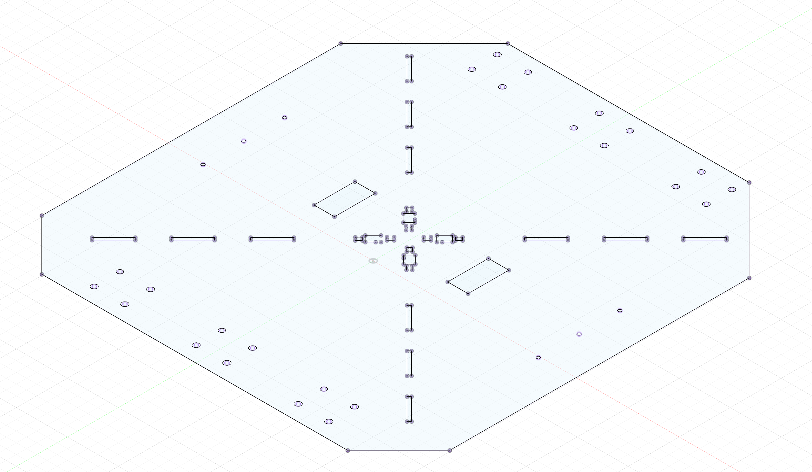
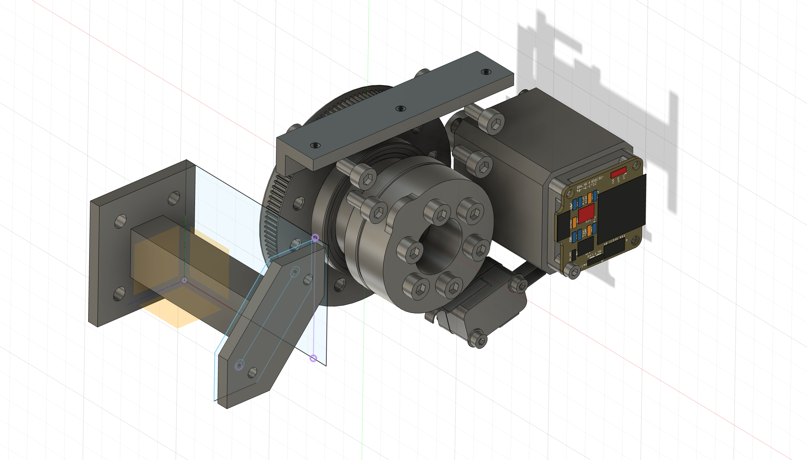
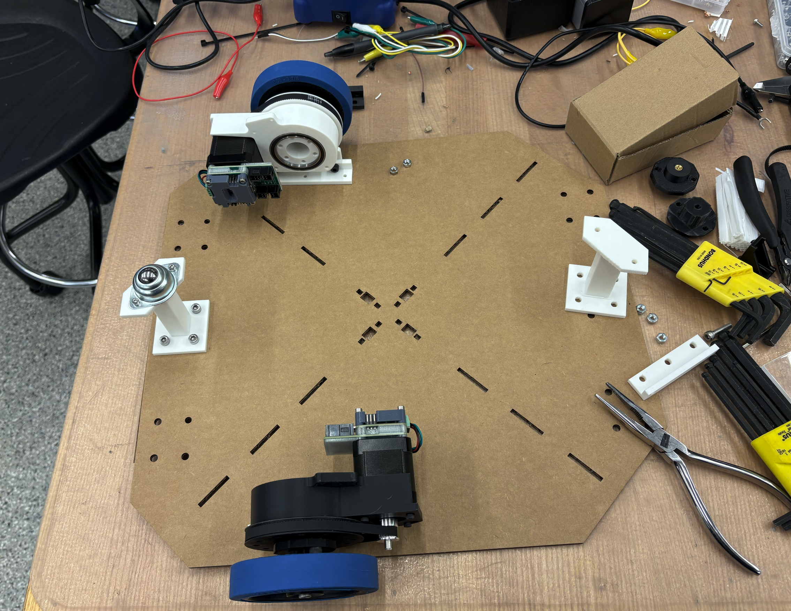

Week 11: Machine Design
This week we worked as a group / section (the EECS section) to build a robot! We started with a long brainstorming meeting where lots of ideas were thrown around. Personally I had initially really wanted to build
For machine week, we decided to build the BrainRotBot 9000. The functional components were the Roomba-like drive train, the arm to scroll the phone screen, and various speaker components. My focus was on a lot of the initial planning and then the drive train + controls component, allowing the robot to find any human and drive towards them, forcing them to see the short-form content playing on the phone.
A lot of our initial ideation, idea voting, design notes are here. Our github is here: https://gitlab.cba.mit.edu/classes/863.25/EECS/eecs-machine.
Drive Train
Differential drive is a simple and widely used robot locomotion method where motion is controlled by varying the speeds of two independently driven wheels. If both wheels rotate at the same speed in the same direction, the robot moves straight; if they rotate at the same speed in opposite directions, the robot turns in place; and if the speeds differ, the robot follows a curved path. While this design is easy to build and control, it can suffer from drifting due to motor inconsistencies, which can be reduced through speed correction or more complex dual-differential mechanisms.

This was the chassis we designed to hold the 2 motors, be able to support our universal pole that everything attaches to, and support the 2 arms with ball bearings for balance.


We predicted the motors might not have enough torque, so we connected an existing rotary axis design for the motors with our control system.

Controls
The initial work of the drive train was figuring out what would work. Through discussions with Claire H, we decided to use a 2-motor differential drive. The motos we used communicated using the SerCATprotocol designed by Quentin and the rest of the HTMAA team. It communicates using a one-byte protocol that sends a chain of bits to the computer host, allowing a single 8-bit command to be decoded by each motor in the daisy chain.
import serial from cobs import cobs class SercatUSB: def __init__(self, port, baudrate=115200, timeout=0.05): self.port = port self.baudrate = baudrate self.ser = serial.Serial(port, baudrate=baudrate, timeout=timeout) def seek_start(self): self.ser.read_until(b"\x00") def write(self, data: bytes): data_enc = cobs.encode(data) + b"\x00" self.ser.write(data_enc) def read(self): data_enc = self.ser.read_until(b"\x00") data = cobs.decode(data_enc[:-1]) return dataBecause we didn’t want to keep a computer connected to the computer host, we decided to use an ESP32 connected to wifi so we can compute our YOLO model on the computer using images sent from the ESP32, and we reply with drive commands. This reduced the load on the ESP32, since it couldn’t actually handle a high-performance image model, and enabled a more interactive debugging environment. Code for motor control here.
This code turns an ESP32-S3 into a vision-guided differential-drive robot controller by tightly coupling camera streaming, remote perception, and real-time motor control. The device streams live JPEG frames over HTTP, simultaneously POSTs each frame to an external server for vision inference, parses the returned JSON drive commands, and updates left/right wheel velocities accordingly.
Notable details: motor motion is handled by a 1 kHz hardware timer that decouples real-time stepping from networking and camera work; wheel velocities are integrated in meters and converted to incremental step commands sent over a custom high-speed serial protocol; the drive logic includes a coarse fallback mapping from velocity differences to fixed step commands; all high-level autonomy (object detection and drive decisions) is offloaded to a remote server, making the ESP32 a low-latency perception-to-actuation bridge rather than a planner.
Speed control: here
This is the key code that converts velocity to position into incremental steps. We integrate velocity in physical units, convert to steps only at the boundary, send deltas (not absolutes), and make our timing error visible rather than hidden.
p1 += v1 * dt; p2 += v2 * dt; p1_steps_new = int(p1 * steps_per_meter); p2_steps_new = int(p2 * steps_per_meter); s1 = p1_steps_new - p1_steps; s2 = p2_steps_new - p2_steps; p1_steps = p1_steps_new; p2_steps = p2_steps_new;This code implements a timed velocity-based controller for a differential-drive robot using two stepper motors. A hardware timer triggers an interrupt at 1 kHz, where desired linear wheel velocities are integrated over time to compute wheel positions, converted into step counts using the wheel diameter, gear ratio, and microstepping configuration, and then sent over a high-speed serial link to a motor controller.
Notable details: wheel motion is computed in continuous units (meters, m/s) and only discretized into steps at the last moment; the interrupt sends **incremental step differences** rather than absolute positions; a custom serial protocol uses a flag bit to mark the first motor command; and the loop is empty, meaning all real-time control happens inside the timer ISR. The setup also explicitly enables the steppers and relies on precise timing rather than delays or polling.
On the computer side, we have YOLO code here. Fractional step accumulation to prevent drift without using PID to preserve long-term accuracy and avoid integrator windup.
steps_f_l = sps_l * dt + self._acc_l steps_l = int(round(steps_f_l)) self._acc_l = steps_f_l - steps_lThis module implements the high-level drive logic that turns vision detections into differential-drive commands. It uses a calibrated homography to map image pixels to ground-plane coordinates, estimates a target’s relative position from a bounding box, and computes left/right wheel velocities using a simple proportional steering controller based primarily on image-center offset rather than distance.
Notable details: perception is explicitly decoupled from actuation via clean velocity outputs (v_left, v_right, stop); stopping is triggered both by geometric distance and apparent object size in the image; manual drive commands are supported for testing and teleoperation; and a separate StepperTranslator converts continuous wheel velocities into drift-free integer step deltas using fractional accumulation and optional chunking to respect packet-size limits, making it well-suited for low-bandwidth or step-limited motor interfaces.